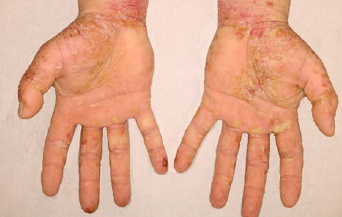
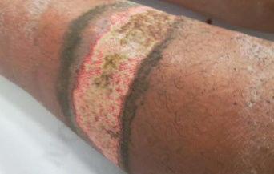

Kontakt mit nicht ausgehärteten Epoxidharzen kann zu einer Schädigung der Gesundheit führen. Am häufigsten geschieht dies durch Hautkontakt, der oft zu Hautreizungen und Ekzemen führt. Durch das Einatmen von Produktdämpfen können das Atemsystem und andere Körperorgane geschädigt werden.
Augenverätzung, Hautreizungen und -verätzungen
Im Falle eines Hautkontaktes mit der Harzkomponente können Hautreizungen wie Hautrötungen und Jucken auftreten. Härter können die Haut sogar verätzen. Beide Komponenten können zu Augenschädigung (Hornhautverätzung) führen.
Hautallergien
Epoxidharze, Härter und Reaktivverdünner können Hautallergien verursachen. Während es bei einigen Beschäftigten sehr schnell zu einer allergischen Reaktion kommen kann (innerhalb von Tagen oder Wochen), treten bei anderen erst nach einer langen Expositionszeit Symptome auf. Wieder andere Personen zeigen keine allergische Reaktion.
Meistens tritt das allergische Ekzem an Händen, Unterarmen und Beinen (Unterschenkeln) auf. Manchmal ist auch das Gesicht betroffen.
Hat sich erst einmal eine Epoxidharz-Allergie entwickelt, führt jeder weitere Kontakt mit Epoxidharzen zu immer stärker werdenden allergischen Reaktionen. In vielen Fällen reagieren die Erkrankten schon auf die in der Luft enthaltenen Epoxidharz-Inhaltsstoffe. Dies äußert sich dann z. B. in Form von Rötungen am ganzen Körper und Schwellungen im Gesicht. In diesem Fall kann der Gesundheitszustand des Betroffenen nur verbessert werden, wenn jeglicher Kontakt mit Epoxidharz-Produkten vermieden wird. Dies bedeutet oftmals, dass die Betroffenen den Beruf wechseln oder eine andere Tätigkeit übernehmen müssen.
Tätigkeiten mit Knetmassen können ebenfalls zu Hautallergien führen.
Wenn eine Epoxidharzallergie besteht, sollte der weitere Kontakt mit Epoxidharzen unterbleiben!

Abb. 1 Handekzem durch Epoxidharze

Abb. 2 Verätzung durch Epoxidharze am Unterschenkel nach Kontamination zwischen Haut und Gummistiefeln
Dämpfe (z. B. flüchtige Härter) können Reizungen der Atemwege und der Augen hervorrufen. In einigen Fällen können die Atemwege von einer Allergie betroffen sein. Die Allergie kann sich durch asthmaähnliche Symptome äußern.
Die Lösemittel in Epoxidharz-Produkten können durch Einatmen und/oder Hautkontakt ins Blut oder ins Gehirn gelangen. Dies kann zu Schwindelgefühl, Brechreiz und anderen gesundheitlichen Beeinträchtigungen führen.